Image recognition is one of the most widely used tasks from computer vision. It is present in products like Google image search and Facebook's face tagging.
Recognizing different objects requires recognizing features unique to that object, but this is not an easy task. Many obstacles stand in the way, such as viewpoint variation, different lighting, scale, deformation, occlusion, background clutter, and variations.
Simple Object Recognition Pipeline
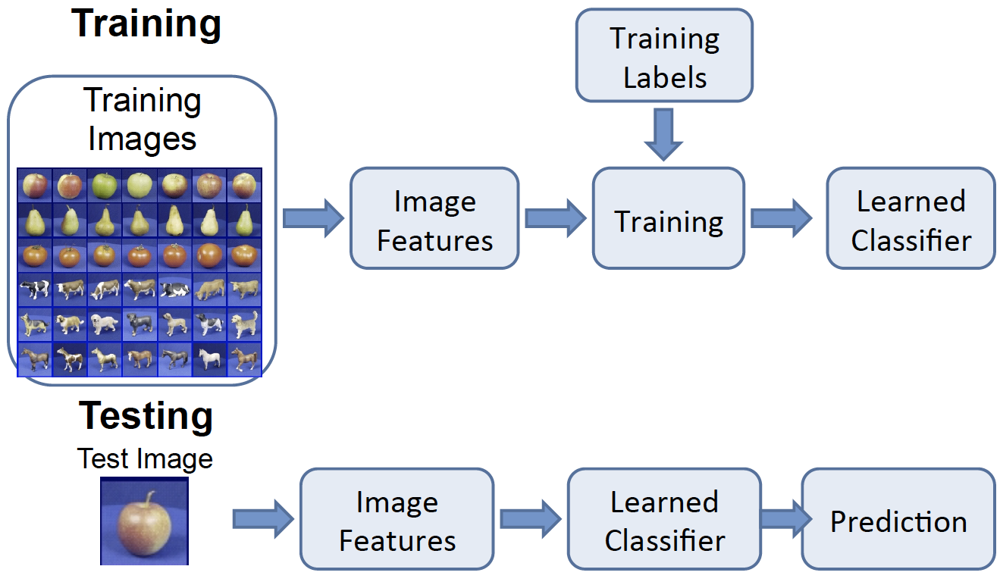
The picture above shows the general flow for object recognition algorithms. As described in Tutorial 2, images can be described using features. During the training process, the image features are learned and/or extracted, input into algorithms, and result in a learned classifier. At test time, the image features of the testing images are put into the same learned classifier, which will predict the class of the test image.
Many algorithms for object recognition rely on pattern recognition using feature-based techniques. We will describe one simple algorithm that uses this pipeline, the K-NN algorithm. Recently, many state-of-the-art algorithms are based on the concept of neural networks. All these algorithms follow the same recognition pipeline.
K Nearest Neighbor (K-NN)
The K-NN algorithm assigns the input to decision regions that are separated by decision boundaries. The regions are separated based on features.
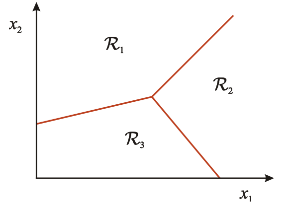You want to use the labels of the nearest training data points to determine what label to assign the test data point. The number of training data points you take into consideration is the "k" part of K-NN.
For example, when K=1,
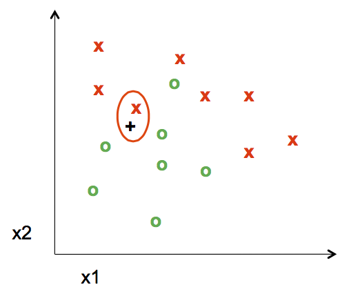The nearest point to the test point assigns its label, in this case a red "x", to the test point. The distance is measured by the Euclidean Distance Formula 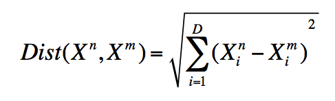
When k=5, the labels of the five nearest training points to the test point is taken into consideration. Since there are three green "o" and two red "x", the test point is assigned as a green "o".
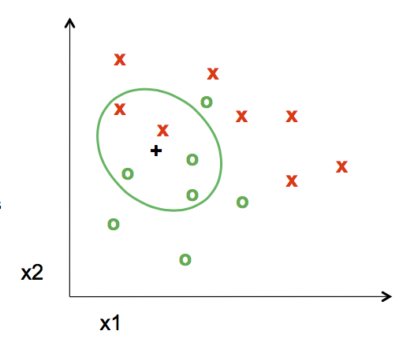K-NN algorithm is a simple start to classify points. It has very flexible decision boundaries, depending on the value of K. There are pros and cons for the size of K. If K is too small, it is sensitive to noise because only the points very close to the test point will decide the label of the test point. But if K is too big, the neighbors that decide the label of the test point could include those from other classes, which will mess up the decision.
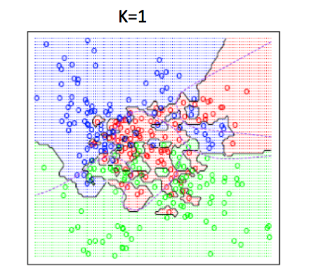 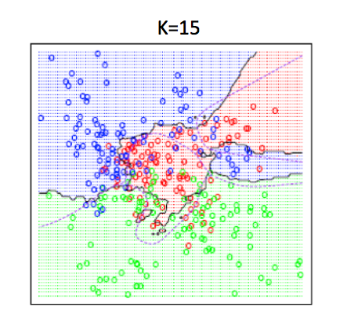The good news is, cross validation, a model evaluation method, can help to decide what value of K to use.
To read more about K-NN algorithm, click here.
Bias-Variance Trade-off
When using any algorithm for object recognition, a common question always pops up. How well does a learned model generalize from the training data to a new test set? There are two components of generalization error. Bias is how the average model differs from the true model. Variance is how different training models are from each other.
The Bias-Variance Trade-off shows that more of one is not necessarily better. Models with few parameters result in a large bias, which is inaccurate. The models are too general, not flexible enough.
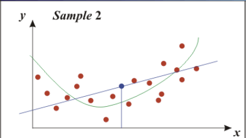Models with too many parameters result in a large variance, which is also inaccurate. The models fit the training model too well, so they are too sensitive to one particular sample.
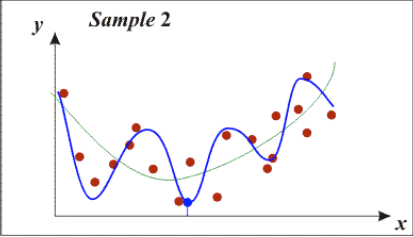Face Recognition
One specific and popular task related to image recognition is face recognition. To humans, it is quite easy to point out human faces in images, whether the faces are facing in different directions. Now, many technological softwares are able to recognize faces, too. For example, Facebook (when tagging friends), surveillance, digital album organizers, and tracking people devices.
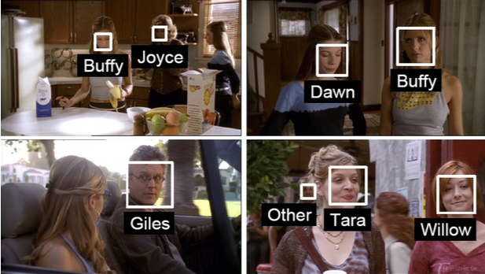We can use standard object pipelines for face recognition. However, the input features we use do not need to be all the pixels from the face. Faces have a lot of structure that we can use to compress the visual image into a lower dimensional representation. We can this Principal Component Analysis.
PCA
Principal Component Analysis, or PCA, is an algorithm used to compress data into lower dimensional representations.
An easy way to understand PCA is using this example from here
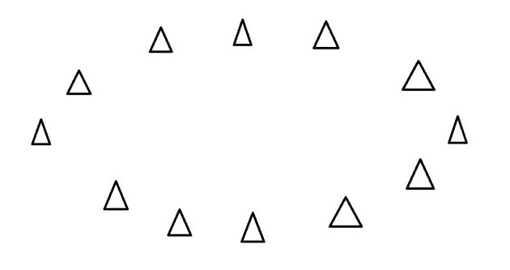
Say you have an oval of triangles and each triangle is a data point. You want to find a line where the data points are the most spread out when they are projected onto the line.
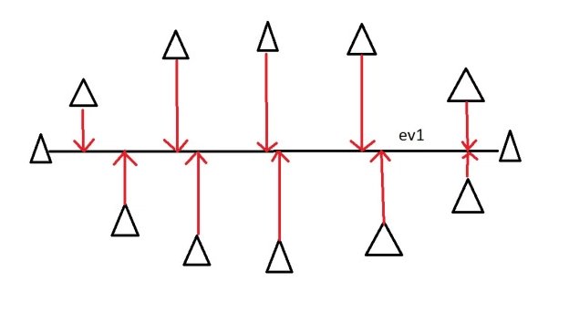The horizontal line is the principal component. In more complex situations, eigenvectors and eigenvalues are used to find the principal components.
In order to distinguish a person from another, a key method is using eigenvectors of the covariance matrix of the face images. The eigenvectors determine the directions of the feature space.
The new data is re-framed in new dimensions.
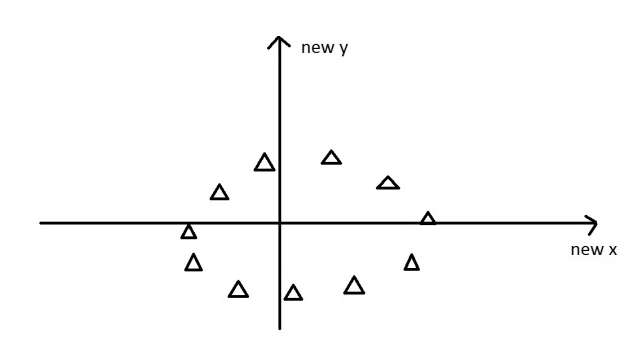To understand eigenvectors visually, click here.
We can represent a face in a lower dimensional space using the top principal components. Then we can input this into recognition algorithms, such as the ones we have discussed.
BACK